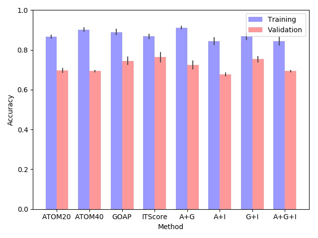

Dove protocol
Dove protocol consists of mainly four steps:
(1) Calculate modified GOAP and ITScore to get each atom's score;
(2) Extract the interface atom type, location and energy score to form the input for deep learning model;
(3) Use the deep learning trained model to predict the probability